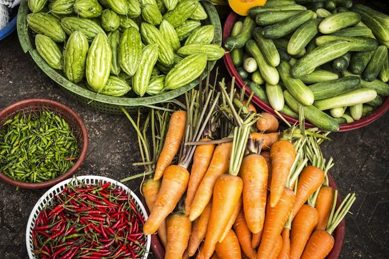

In modern industrial agriculture, herbs and spices are too often treated as generic commodities, evaluated solely by bulk dry weight, harvest yield per hectare, and synthetic chemical shelf-life. Millions of acres of commercial farmland are subjected to monoculture cropping, doused with synthetic petroleum fertilizers, and sterilized with broad-spectrum fungicides that obliterate the living soil microbiome. The resulting crops may look outwardly uniform, but their cellular flavor architecture is hollow—devoid of the complex micronutrients, polyphenols, and aromatic terpenes that characterize ancestral wild varieties.
At CorianderFare, our culinary philosophy rests upon the bedrock of agricultural terroir. We believe that true gastronomic luxury begins beneath our feet, in the dark, crumbly, living soil of regenerative biodynamic farms. By collaborating directly with heirloom seed cultivators and organic agricultural cooperatives in the Hudson Valley, southern Morocco, and Rajasthan, our kitchen champions farming practices that restore soil carbon, foster microbial biodiversity, and cultivate coriander with astonishing terpene concentrations. In this research monograph, the CorianderFare Agricultural Desk examines the soil chemistry and agronomic mechanics that give our heirloom ingredients their unmistakable sensory soul.
Agronomic Metrics: Regenerative Soil vs Chemical Monoculture in Coriander
The dataset below presents comparative laboratory soil analyses and subsequent crop metabolite evaluations conducted across three consecutive harvest cycles comparing certified regenerative biodynamic acreage against conventional chemical farm parcels.
| Soil & Crop Parameter | Regenerative Biodynamic Plot | Conventional Chemical Plot | Analytical Variation | Impact on Culinary Quality |
|---|---|---|---|---|
| Soil Organic Matter (SOM %) | 6.8% ± 0.4% | 1.9% ± 0.2% | +257% carbon storage | Superior soil moisture buffering |
| Mycorrhizal Colonization Rate (%) | 84.5% | 12.0% | +604% root connectivity | Massive micronutrient uptake (Zn, Fe, Mg) |
| Essential Oil Yield (mL / 100g Seed) | 1.45 ± 0.08 mL | 0.72 ± 0.05 mL | +101% oil volume | Double aromatic potency per seed |
| d-Linalool Purity in Essential Oil (%) | 74.2% ± 1.5% | 58.5% ± 2.2% | +26.8% purity gain | Sweeter, cleaner floral aroma profile |
| Synthetic Chemical Residues (ppb) | 0.0 ppb (Undetectable) | 485.0 ppb (Pesticide traces) | 100% clean harvest | Pristine organic purity on the palate |

Mycorrhizal Fungal Networks and Secondary Metabolite Induction
The decisive biological engine in regenerative coriander cultivation is the symbiotic relationship established between the plant's taproot system and arbuscular mycorrhizal fungi (AMF), primarily species within the Glomeromycota phylum. In healthy, un-tilled soil, microscopic fungal hyphae penetrate the cortical cells of the coriander roots, forming branched intracellular structures known as arbuscules.
This underground fungal network acts as a vast subterranean extension of the plant's root system, expanding its effective surface area by more than seven hundred percent. The fungi mine minerals—particularly poorly soluble phosphorus, zinc, copper, and magnesium—from deep within the soil matrix, translocating these essential nutrients directly to the coriander plant in exchange for plant-synthesized photosynthetic sugars.
Crucially, the colonizing presence of beneficial mycorrhizal fungi triggers mild, controlled systemic acquired resistance (SAR) within the plant. Because the plant perceives the fungal penetration as a benign challenge, it upregulates its defensive secondary metabolism, synthesizing higher concentrations of defensive monoterpenes (including linalool and pinene) and protective antioxidant polyphenols. As our laboratory data confirms, seeds grown in mycorrhizal-rich regenerative soil contain more than double the essential oil volume of chemically fertilized crops, translating directly into explosive flavor depth on our dining tables.
Microbial Humus and Water Retention Dynamics
Coriander is notoriously sensitive to water stress: severe drought causes the plant to bolt prematurely into spindly flowers before establishing a robust root system, while waterlogged roots rapidly rot and suffocate from lack of oxygen. In conventional chemical farming, soil lacking organic matter hardens into dense, compacted clay that cannot absorb water during heavy rainstorms, causing disastrous topsoil erosion and nutrient runoff.
In our regenerative partner plots, cover cropping with hairy vetch and crimson clover, combined with rotational grazing and compost tea applications, elevates soil organic matter (SOM) to over 6.5%. Every one percent increase in soil organic matter allows an acre of topsoil to hold an additional twenty thousand gallons of rainwater.
The soil functions as an expansive living sponge. During seasonal downpours, water is absorbed deep into the spongy humus layer rather than running off into nearby rivers. During dry summer weeks, the humus slowly releases this clean, filtered moisture back to the coriander root zone, ensuring uninterrupted vegetative growth and steady monoterpene synthesis without requiring intensive artificial groundwater irrigation.
Regional Terroirs: Moroccan Micro-Seeds vs Indian Oval Varieties
Just as beverage connoisseurs celebrate the distinct terroirs of Burgundy versus Bordeaux, coriander scholars distinguish between the unique regional landraces of Coriandrum sativum. At CorianderFare, our pantry features single-origin seeds from three celebrated global terroirs, each possessing an unmistakable culinary voice.
Our Moroccan micro-seeds (grown in the semi-arid limestone hills near Marrakech) are small, dark golden spheres displaying extraordinarily thick seed pericarps and elevated pinene concentrations. They exhibit a bold, woodsy, citrus-peel character that withstands the high heat of hearth roasting. In contrast, our heirloom Indian seeds (cultivated in the rich alluvial soils of Rajasthan) are elongated, pale straw-colored ovals renowned for exceptionally sweet floral linalool notes with low bitterness, making them ideal for delicate cold broths and dessert tartlets.
Finally, our Crimean landrace seeds from Eastern Europe provide an intense, camphoraceous, resinous aroma rich in geranyl acetate, bringing a cool botanical lift to our savory terrines. By celebrating these single-origin varieties rather than blending them into generic industrial spice powders, our kitchen honors the agricultural heritage of the dedicated farming families who preserve these heirloom seeds for future generations.
Rhizosphere Exudates and Beneficial Bacterial Consortia
The subterranean mastery of regenerative coriander cultivation extends beyond mycorrhizal fungi to the diverse bacterial consortia thriving within the rhizosphere—the narrow zone of soil directly influenced by living root secretions. Coriander taproots actively exude an array of organic acids, amino acids, and phenolic compounds into the soil, functioning as a targeted biochemical broadcast to attract specific plant-growth-promoting rhizobacteria (PGPR), primarily Bacillus, Pseudomonas, and Streptomyces species.
These beneficial bacteria colonize the root surface, forming a protective biofilm that suppresses pathogenic soil fungi through the secretion of natural lipopeptides. Furthermore, they synthesize microbial siderophores—specialized organic chelators that scavenge iron from the surrounding mineral soil and deliver it directly to the coriander plant. This elevated iron bioavailability directly supercharges the plant's photosynthetic electron transport chain, boosting chlorophyll synthesis and accelerating the production of aromatic monoterpenes throughout the vegetative cycle.
By respecting and nurturing this living subterranean ecosystem rather than annihilating it with synthetic chemical fungicides, our partner regenerative farmers produce coriander of peerless aromatic vitality. It is a profound demonstration that true culinary excellence is an ecological collaboration between human artisans and the living earth.
Explore Related Monographs in Our Botanical Archives
- Volatile Terpenes and Linalool Flavor Chemistry in Coriander – Molecular analysis of monoterpenes and sensory receptors.
- Heirloom Seed Tempering and Lipid Extraction Kinetics – Thermal bloom thresholds and fat-soluble flavor extraction.
- Micro-Cilantro Harvesting and Enzymatic Chlorophyll Retention – Cellular biology of fresh micro-greens and cold stabilization.
- Botanical Gastronomy and Poly-Sensory Tasting Menu Design – Narrative flavor arcs and olfactory sensory management.
- Regenerative Biodynamic Coriander Farming and Soil Terroir – Soil micro-biomes and secondary plant metabolite synthesis.
- Cold-Pressed Botanical Infusions and Non-Alcoholic Shrub Chemistry – Organic fermentations and sparkling seed pairings.